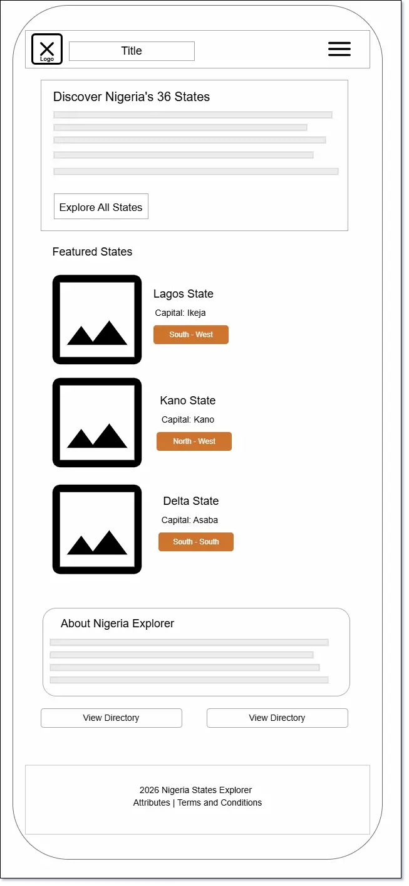
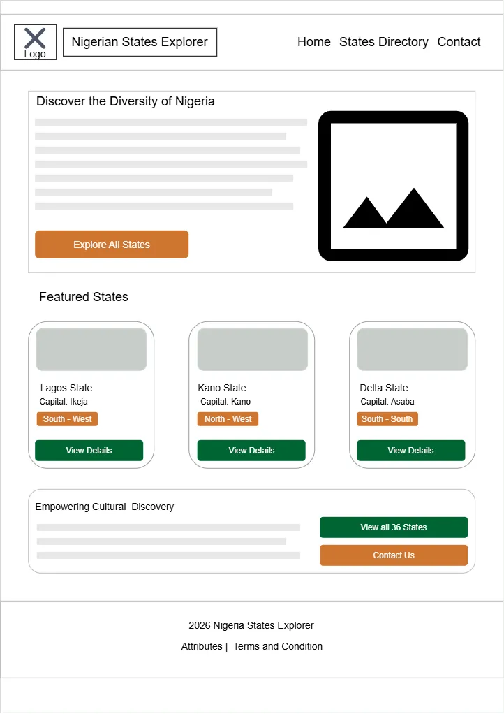

Site Name
Proposed Site Name: Nigerian States Explorer
Reason for this name: This name clearly communicates the website's mission of enabling users, especially young students, travelers, and diaspora Nigerians to discover and explore Nigeria and it states.
Site Purpose
The primary purpose of Nigerian States Explorer is to provide a clean, educational, and reference website about Nigeria's geopolitical diversity. This site offers:
- Accurate baseline facts for all 36 states in Nigeria
- Search and filter system on the directory page to sort states by geopolitical zone.
- Feedback and inquiry portal for state cultural updates and visitor questions.
Scenarios
- Scenario 1 As a Nigerian living abroad planning a trip back home, how can I filter and browse specific states and read about their key cultural facts.
- Scenario 2 As a high school geography student, how can I quickly view all the states located in the North-Central geopolitical zone alongside their capitals and population figures for my class assignment?
- Scenario 3 As a site user who noticed an update regarding my state's cultural landmarks, how do I submit feedback through a contact form and receive confirmation?
Color Schema
The color palette reflects the identity of Nigeria vibrant green and warm land tones.
Typography
Two complementary Google Fonts are imported for the desktop and mobile devices:
Heading Font: Montserrat (Bold / Sans-Serif)
Used for page titles, state card headers, navigation branding, hero headings, and section headings. Gives a modern, structured, and authoritative look.
Body Font: Inter (Regular / Sans-Serif)
Used for all paragraph text, state statistics, modal content, contact form labels, and operational instructions. Engineered specifically for high legibility on digital screens.
Layout Wireframes
Mobile View

Desktop View
